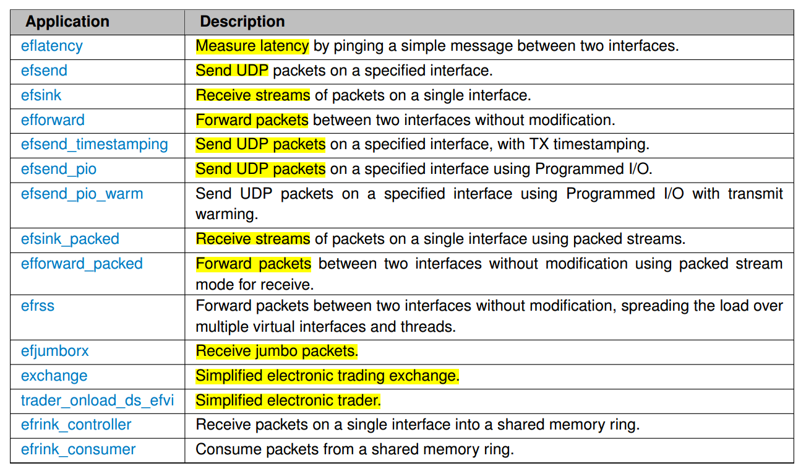

初探
固件信息
可以通过命令查看当前的网卡连接情况
ip address
1: lo: <LOOPBACK,UP,LOWER_UP> mtu 65536 qdisc noqueue state UNKNOWN group default qlen 1000
link/loopback 00:00:00:00:00:00 brd 00:00:00:00:00:00
inet 127.0.0.1/8 scope host lo
valid_lft forever preferred_lft forever
inet6 ::1/128 scope host
valid_lft forever preferred_lft forever
2: enp5s0: <BROADCAST,MULTICAST,UP,LOWER_UP> mtu 1500 qdisc pfifo_fast state UP group default qlen 1000
link/ether 4c:ed:fb:c2:25:67 brd ff:ff:ff:ff:ff:ff
inet 192.168.1.115/24 brd 192.168.1.255 scope global noprefixroute dynamic enp5s0
valid_lft 1496sec preferred_lft 1496sec
inet6 fe80::6804:b02d:fb9f:19b0/64 scope link noprefixroute
valid_lft forever preferred_lft forever
3: enp1s0f0: <NO-CARRIER,BROADCAST,MULTICAST,UP> mtu 1500 qdisc mq state DOWN group default qlen 1000
link/ether 00:0f:53:5d:d3:90 brd ff:ff:ff:ff:ff:ff
4: enp1s0f1: <BROADCAST,MULTICAST,UP,LOWER_UP> mtu 1500 qdisc mq state UP group default qlen 1000
link/ether 00:0f:53:5d:d3:91 brd ff:ff:ff:ff:ff:ff
inet 192.168.1.112/24 brd 192.168.1.255 scope global noprefixroute dynamic enp1s0f1
valid_lft 1544sec preferred_lft 1544sec
inet6 fe80::20f:53ff:fe5d:d391/64 scope link
valid_lft forever preferred_lft forever
5: virbr0: <NO-CARRIER,BROADCAST,MULTICAST,UP> mtu 1500 qdisc noqueue state DOWN group default qlen 1000
link/ether 52:54:00:c5:0a:77 brd ff:ff:ff:ff:ff:ff
inet 192.168.122.1/24 brd 192.168.122.255 scope global virbr0
valid_lft forever preferred_lft forever
6: virbr0-nic: <BROADCAST,MULTICAST> mtu 1500 qdisc pfifo_fast master virbr0 state DOWN group default qlen 1000
link/ether 52:54:00:c5:0a:77 brd ff:ff:ff:ff:ff:ff
厂商的MAC地址前四位是00:0F，以此判断哪个网卡为Solarflare的网卡。因此，我们可以看出以下两个网卡为 Solarflare
enp1s0f0enp1s0f1
我们还可以通过命令查看具体的网卡信息
## 需要先安装 openonload
ethtool -i enp1s0f1
driver: sfc
version: 4.15.0.1012
firmware-version: 4.7.1.1001 rx1 tx1
expansion-rom-version:
bus-info: 0000:01:00.1
supports-statistics: yes
supports-test: yes
supports-eeprom-access: no
supports-register-dump: yes
supports-priv-flags: yes
下载驱动
OpenOnload 原先是作为一个独立的开发项目存在，在官网可以获取相关的资讯，或者直接进入下载网页获取指定版本的驱动。
https://www.openonload.org/download/
Index of /download/
../
ppc/ 15-Feb-2016 11:19 -
sfnettest/ 29-Oct-2013 15:45 -
sfptpd_reverse_ptp_preview/ 18-Aug-2017 10:59 -
sysjitter/ 30-May-2017 17:08 -
efx_ioctl_timesync.h 23-Jun-2016 16:50 10271
openonload-201502-ChangeLog.txt 01-Mar-2015 11:34 65722
openonload-201502-README.txt 01-Mar-2015 11:34 3011
openonload-201502-ReleaseNotes.txt 01-Mar-2015 11:34 11998
openonload-201502-u1-ChangeLog.txt 30-Mar-2015 16:35 67171
openonload-201502-u1-README.txt 30-Mar-2015 16:35 3030
openonload-201502-u1-ReleaseNotes.txt 30-Mar-2015 16:35 14761
openonload-201502-u1.tgz 30-Mar-2015 16:35 3061647
openonload-201502-u1.tgz.md5 30-Mar-2015 16:35 59
openonload-201502-u2-ChangeLog.txt 04-Jun-2015 16:52 70484
openonload-201502-u2-README.txt 04-Jun-2015 16:52 3161
openonload-201502-u2-ReleaseNotes.txt 04-Jun-2015 16:52 16556
openonload-201502-u2.tgz 04-Jun-2015 16:52 3081875
openonload-201502-u2.tgz.md5 04-Jun-2015 16:52 59
openonload-201502-u3-ChangeLog.txt 19-Aug-2015 15:54 70604
openonload-201502-u3-README.txt 19-Aug-2015 15:54 3161
openonload-201502-u3-ReleaseNotes.txt 19-Aug-2015 15:54 16967
openonload-201502-u3.tgz 19-Aug-2015 15:54 3276190
openonload-201502-u3.tgz.md5 19-Aug-2015 15:54 59
openonload-201502.tgz 01-Mar-2015 11:34 3056445
openonload-201502.tgz.md5 01-Mar-2015 11:34 56
openonload-201509-ChangeLog.txt 06-Oct-2015 16:26 79017
openonload-201509-README.txt 06-Oct-2015 16:26 3145
openonload-201509-ReleaseNotes.txt 06-Oct-2015 16:26 10035
openonload-201509-u1-ChangeLog.txt 01-Feb-2016 15:51 84338
openonload-201509-u1-README.txt 01-Feb-2016 15:51 3171
openonload-201509-u1-ReleaseNotes.txt 01-Feb-2016 15:51 12329
openonload-201509-u1.tgz 01-Feb-2016 15:51 3367951
openonload-201509-u1.tgz.md5 01-Feb-2016 15:51 59
openonload-201509.tgz 06-Oct-2015 16:26 3328928
openonload-201509.tgz.md5 06-Oct-2015 16:26 56
openonload-201606-ChangeLog.txt 30-Jun-2016 17:14 90351
openonload-201606-README.txt 30-Jun-2016 17:14 3162
openonload-201606-ReleaseNotes.txt 30-Jun-2016 17:14 7501
openonload-201606-preview1.zip 02-Jun-2016 19:06 4544551
openonload-201606-u1-ChangeLog.txt 03-Nov-2016 17:33 94806
openonload-201606-u1-README.txt 03-Nov-2016 17:33 3178
openonload-201606-u1-ReleaseNotes.txt 03-Nov-2016 17:33 13160
openonload-201606-u1.1-ChangeLog.txt 01-Feb-2017 15:01 95339
openonload-201606-u1.1-README.txt 01-Feb-2017 15:01 3173
openonload-201606-u1.1-ReleaseNotes.txt 01-Feb-2017 15:01 13564
openonload-201606-u1.1.tgz 01-Feb-2017 15:01 4416893
openonload-201606-u1.1.tgz.md5 01-Feb-2017 15:01 61
openonload-201606-u1.2-ChangeLog.txt 16-Mar-2017 16:34 96359
openonload-201606-u1.2-README.txt 16-Mar-2017 16:34 3196
openonload-201606-u1.2-ReleaseNotes.txt 16-Mar-2017 16:34 14428
openonload-201606-u1.2.tgz 16-Mar-2017 16:34 4451313
openonload-201606-u1.2.tgz.md5 16-Mar-2017 16:34 61
openonload-201606-u1.3-ChangeLog.txt 27-Jun-2017 10:12 97889
openonload-201606-u1.3-README.txt 27-Jun-2017 10:12 3192
openonload-201606-u1.3-ReleaseNotes.txt 27-Jun-2017 10:12 16072
openonload-201606-u1.3.tgz 27-Jun-2017 10:12 4916267
openonload-201606-u1.tgz 03-Nov-2016 17:33 4605605
openonload-201606-u1.tgz.md5 03-Nov-2016 17:33 59
openonload-201606.tgz 30-Jun-2016 17:14 4170978
openonload-201606.tgz.md5 30-Jun-2016 17:14 56
openonload-201710-ChangeLog.txt 10-Oct-2017 15:32 108975
openonload-201710-README.txt 10-Oct-2017 15:32 3194
openonload-201710-ReleaseNotes.txt 10-Oct-2017 15:32 9522
openonload-201710-u1-ChangeLog.txt 23-Jan-2018 14:58 109112
openonload-201710-u1-README.txt 23-Jan-2018 14:58 3178
openonload-201710-u1-ReleaseNotes.txt 23-Jan-2018 14:58 9802
openonload-201710-u1.1-ChangeLog.txt 23-Apr-2018 16:08 109283
openonload-201710-u1.1-README.txt 23-Apr-2018 16:08 3219
openonload-201710-u1.1-ReleaseNotes.txt 23-Apr-2018 16:08 10557
openonload-201710-u1.1.tgz 23-Apr-2018 16:08 4879299
openonload-201710-u1.1.tgz.md5 23-Apr-2018 16:08 61
openonload-201710-u1.tgz 23-Jan-2018 14:58 4890521
openonload-201710-u1.tgz.md5 23-Jan-2018 14:58 59
openonload-201710.tgz 10-Oct-2017 15:32 4875622
openonload-201710.tgz.md5 11-Oct-2017 07:50 56
openonload-201805-ChangeLog.txt 09-May-2018 08:38 118468
openonload-201805-README.txt 09-May-2018 08:38 3282
openonload-201805-ReleaseNotes.txt 09-May-2018 08:38 14680
openonload-201805-u1-ChangeLog.txt 28-Aug-2018 09:51 118663
openonload-201805-u1-README.txt 28-Aug-2018 09:51 3276
openonload-201805-u1-ReleaseNotes.txt 28-Aug-2018 09:51 15603
openonload-201805-u1.tgz 28-Aug-2018 09:51 4659172
openonload-201805-u1.tgz.md5 28-Aug-2018 09:51 59
openonload-201805.tgz 09-May-2018 08:38 4682883
openonload-201805.tgz.md5 09-May-2018 08:38 56
openonload-201811-ChangeLog.txt 03-Dec-2018 23:39 129366
openonload-201811-README.txt 03-Dec-2018 23:39 3384
openonload-201811-ReleaseNotes.txt 03-Dec-2018 23:39 8249
openonload-201811-u1-ChangeLog.txt 02-Jul-2019 10:53 133385
openonload-201811-u1-README.txt 02-Jul-2019 10:53 3415
openonload-201811-u1-ReleaseNotes.txt 02-Jul-2019 10:53 9679
openonload-201811-u1.tgz 02-Jul-2019 10:53 4978077
openonload-201811-u1.tgz.md5 02-Jul-2019 10:53 59
openonload-201811.tgz 03-Dec-2018 23:39 4951381
openonload-201811.tgz.md5 03-Dec-2018 23:39 56
安装
## 进入相应的文件夹
cd openonload-201811/
## 源代码存放
cd scripts/
ll
total 240K
drwxr-xr-x. 6 fl fl 4.0K Dec 3 2018 .
drwxr-xr-x. 7 fl fl 243 Dec 9 03:39 ..
-rwxr-xr-x. 1 fl fl 154 Apr 12 2018 check_binary_presence
-rwxr-xr-x. 1 fl fl 329 Apr 12 2018 check_header_presence
-rwxr-xr-x. 1 fl fl 358 Apr 12 2018 check_library_presence
-rwxr-xr-x. 1 fl fl 573 Apr 12 2018 check_prototype
-rwxr-xr-x. 1 fl fl 2.2K Nov 8 2018 libc_compat.sh
-rwxr-xr-x. 1 fl fl 1.4K Apr 12 2018 mmake
-rwxr-xr-x. 1 fl fl 16K Nov 8 2018 mmakebuildtree
-rwxr-xr-x. 1 fl fl 15K Nov 8 2018 mmaketool
-rwxr-xr-x. 1 fl fl 13K Nov 9 2018 onload
drwxr-xr-x. 2 fl fl 75 Oct 26 2018 onload_apps
-rwxr-xr-x. 1 fl fl 6.0K Nov 8 2018 onload_build
-rwxr-xr-x. 1 fl fl 27K Dec 3 2018 onload_install
-rwxr-xr-x. 1 fl fl 19K Jul 16 2018 onload_iptables
-rwxr-xr-x. 1 fl fl 8.2K Nov 8 2018 onload_metrics
drwxr-xr-x. 2 fl fl 4.0K Dec 3 2018 onload_misc
drwxr-xr-x. 2 fl fl 4.0K Nov 9 2018 onload_profiles
-rwxr-xr-x. 1 fl fl 2.2K Jul 16 2018 onload_rpmtest
-rwxr-xr-x. 1 fl fl 3.3K Nov 8 2018 onload_tcpdump
-rwxr-xr-x. 1 fl fl 8.0K Nov 9 2018 onload_tool
-rwxr-xr-x. 1 fl fl 748 Apr 12 2018 sfcaffinity
-rwxr-xr-x. 1 fl fl 30K Apr 12 2018 sfcaffinity_config
-rw-r--r--. 1 fl fl 15K Apr 12 2018 sfcaffinity.py
-rwxr-xr-x. 1 fl fl 6.5K Apr 12 2018 sfcirqaffinity
-rw-r--r--. 1 fl fl 4.6K Apr 12 2018 sfcmask.py
drwxr-xr-x. 2 fl fl 108 Dec 3 2018 sh
-rwxr-xr-x. 1 fl fl 1.1K Apr 12 2018 zf_debug
## 搭建环境
./onload_build
## 执行安装
./onload_install
#加载 onload
onload_tool reload
## 开启 rx1 tx1 模式
## Ref： https://support.solarflare.com/docs/SF-103837-CD
## Adapters Software Support
sfboot --adapter=enp1s0f1 firmware-variant=ultra-low-latency
## 需要重启
sudo reboot now
ethtool -i enp1s0f1
driver: sfc
version: 4.15.0.1012
firmware-version: 6.2.7.1001 rx1 tx1
expansion-rom-version:
bus-info: 0000:01:00.1
supports-statistics: yes
supports-test: yes
supports-eeprom-access: no
supports-register-dump: yes
supports-priv-flags: yes
卸载
#unload onload
onload_tool unload
#remove sfc
modprobe –r sfc
#if found any sfc rpm, then remove them
rpm -qa | grep sfc
rpm -e *sfc*.rpm
#unintall onload
./onload_misc/onload_uninstall
使用
OpenOnload有两种模式。
- Spinning模式（busy-wait）中，加速进程的每个线程会占用一整个CPU core，始终处于waiting状态。通过htop可以看到该CPU的使用率为100%。spinning模式速度更快，但是要注意CPU core的数量。
- Interrupt模式中，线程不会占用满一个CPU core，但可以将中断Interrupt放在一个CPU core。interrupt模式也有加速效果，理论上比spinning略差一些。当服务器上总线程数大于CPU core的数量时，interrupt可能优于spinning，需要测试来论证。
使用 spinning 模式加速应用
查看CPU core序号（注意，一般服务器是从0开始排序，也有不正常的版本，请查证。否则OpenOnload选择的CPU core可能不存在）
egrep "(id|processo).*:|^ *$" /proc/cpuinfo
onload -p latency taskset -c 3 ./[Application]
onload --profile=latency taskset -c 2 ./[Application]
其中，-c 参数选择 CPU core 的号码，也可以选择多个core：-c 2,3。选择core的数量与进程的线程数有关。
使用 internal 模式加速应用
onload ./[Application]
demo
所有运行的demo都在我们事先下载得到的压缩包里面。一般来说
- files under the
gnudirectory are 32-bit (if these are built) - files under the
gnu_x86_64directory are 64-bit.
我们进入 gnu_x86_64 的文件夹即可。
cd scripts/
## 增加环境路径
export PATH="$PWD:$PATH"
## 使用 64 位进行编译
cd ../build/gnu_x86_64/tests/ef_vi/
## 先清理，然后安装
make clean && make
pwd
/root/openonload-201811/build/gnu_x86_64/tests/ef_vi
ls -alh
total 5304
-rw-r--r--. 1 root root 1 Nov 17 03:53 copy.depends
-rw-r--r--. 1 root root 0 Nov 17 03:53 copy.done
-rwxr-xr-x. 1 root root 343784 Nov 25 04:24 efforward
-rw-r--r--. 1 root root 2724 Nov 25 04:24 efforward.d
-rw-r--r--. 1 root root 79712 Nov 25 04:24 efforward.o
-rwxr-xr-x. 1 root root 387320 Nov 25 04:24 efforward_packed
-rw-r--r--. 1 root root 2745 Nov 25 04:24 efforward_packed.d
-rw-r--r--. 1 root root 86952 Nov 25 04:24 efforward_packed.o
-rwxr-xr-x. 1 root root 368680 Nov 25 04:24 efjumborx
-rw-r--r--. 1 root root 2670 Nov 25 04:24 efjumborx.d
-rw-r--r--. 1 root root 80384 Nov 25 04:24 efjumborx.o
-rwxr-xr-x. 1 root root 465904 Nov 25 04:24 eflatency
-rw-r--r--. 1 root root 5631 Nov 25 04:24 eflatency.d
-rw-r--r--. 1 root root 121064 Nov 25 04:24 eflatency.o
-rwxr-xr-x. 1 root root 326256 Nov 25 04:24 efrss
-rw-r--r--. 1 root root 2658 Nov 25 04:24 efrss.d
-rw-r--r--. 1 root root 67640 Nov 25 04:24 efrss.o
-rwxr-xr-x. 1 root root 421928 Nov 25 04:24 efsend
-rw-r--r--. 1 root root 5366 Nov 25 04:24 efsend_common.d
-rw-r--r--. 1 root root 33168 Nov 25 04:24 efsend_common.o
-rw-r--r--. 1 root root 5437 Nov 25 04:24 efsend.d
-rw-r--r--. 1 root root 51224 Nov 25 04:24 efsend.o
-rwxr-xr-x. 1 root root 427032 Nov 25 04:24 efsend_pio
-rw-r--r--. 1 root root 5446 Nov 25 04:24 efsend_pio.d
-rw-r--r--. 1 root root 45840 Nov 25 04:24 efsend_pio.o
-rwxr-xr-x. 1 root root 435640 Nov 25 04:24 efsend_pio_warm
-rw-r--r--. 1 root root 5563 Nov 25 04:24 efsend_pio_warm.d
-rw-r--r--. 1 root root 63160 Nov 25 04:24 efsend_pio_warm.o
-rwxr-xr-x. 1 root root 409200 Nov 25 04:24 efsend_timestamping
-rw-r--r--. 1 root root 5476 Nov 25 04:24 efsend_timestamping.d
-rw-r--r--. 1 root root 43816 Nov 25 04:24 efsend_timestamping.o
-rwxr-xr-x. 1 root root 410640 Nov 25 04:24 efsink
-rw-r--r--. 1 root root 2733 Nov 25 04:24 efsink.d
-rw-r--r--. 1 root root 97664 Nov 25 04:24 efsink.o
-rwxr-xr-x. 1 root root 369440 Nov 25 04:24 efsink_packed
-rw-r--r--. 1 root root 2736 Nov 25 04:24 efsink_packed.d
-rw-r--r--. 1 root root 65952 Nov 25 04:24 efsink_packed.o
-rw-r--r--. 1 root root 150 Nov 17 03:53 GNUmakefile
-rwxr-xr-x. 1 root root 5220 Nov 25 04:24 stats
-rw-r--r--. 1 root root 2623 Nov 25 04:24 utils.d
-rw-r--r--. 1 root root 79648 Nov 25 04:24 utils.o
主要应用

测试
服务器与客户端

延时测试
要求：
- 两台机器都配备 Solarflare 网络适配器
- 两台机器使用一根光纤线连接 Solarflare 接口
- 分别为两块卡上的 Solarflare 接口配置一个 IP 地址， 使得它们之间可以通讯，使用 ping 命令验证连接
- OpenOnload 都分别安装到两台机器上
- Solarflare 的 sfnettest 和 NetPerf 都分别安装到两台机器上
软件安装：
安装 openonload
## 进入相应的文件夹 cd openonload-201811/ ## 源代码存放 cd scripts/ ## 搭建环境 ./onload_build ## 执行安装 ./onload_install #加载 onload onload_tool reload安装 Netperf
wget http://repo.iotti.biz/CentOS/7/x86_64/netperf-2.7.0-1.el7.lux.x86_64.rpm rpm -i netperf-2.7.0-1.el7.lux.x86_64.rpm
安装 sfnettest
wget https://www.openonload.org/download/sfnettest/sfnettest-1.5.0.tgz tar xvf sfnettest-1.5.0.tgz cd sfnettest-1.5.0/src make调优设置
## 停止 cpuspeed 服务以避免进入省电模式，降低CPU时钟速度 systemctl stop cpuspeed ## 停止 irqbalance 服务器以防止 OS 在可用的CPU内核之间重新平衡中断 systemctl stop irqbalance ## 停止防火墙辐射器以消除简介消耗 systemctl stop firewalld ## 禁用 interrupt moderation ethtool -C enp1s0f1 rx-usecs-irq 0 adaptive-rx off ## 启动低延时配置：tuned-adm tuned-adm list tuned-adm profile network-latency ## 防止系统进入 CPU 低功耗模式 cstatessfnettest 延时测试
参数说明
--profile=latency：测试延时模式taskset -c 1：绑定 cpu core 的号码 1--maxms=10000指发送的最大数据包大小--affinity "1;1"指使用core 1发送，使用core 1接收（可以选不同的core）
首先，在服务器开启
onload --profile=latency taskset -c 1 ./sfnt-pingpong --maxms=10000 --affinity 1,1运行成功后等待客户端接入
oo:sfnt-pingpong[17337]: Using OpenOnload 201811 Copyright 2006-2018 Solarflare Communications, 2002-2005 Level 5 Networks [2] sfnt-pingpong: server: waiting for client to connect...TCP 测试
onload --profile=latency taskset -c 1 ./sfnt-pingpong --maxms=10000 --affinity 1,1 tcp 127.0.0.1运行结果如下
oo:sfnt-pingpong[17093]: Using OpenOnload 201811 Copyright 2006-2018 Solarflare Communications, 2002-2005 Level 5 Networks [4] # cmdline: ./sfnt-pingpong --maxms=10000 --affinity 1,1 tcp 127.0.0.1 # version: 1.5.0 # src: 8dc3b027d85b28bedf9fd731362e4968 # date: Wed Dec 11 02:19:49 EST 2019 # uname: Linux localhost.localdomain 3.10.0-1062.4.1.el7.x86_64 #1 SMP Fri Oct 18 17:15:30 UTC 2019 x86_64 x86_64 x86_64 GNU/Linux # cpu: model name : Intel(R) Core(TM) i5-8500 CPU @ 3.00GHz # lspci: 01:00.0 Ethernet controller: Solarflare Communications SFC9120 10G Ethernet Controller (rev 01) # lspci: 01:00.1 Ethernet controller: Solarflare Communications SFC9120 10G Ethernet Controller (rev 01) # lspci: 05:00.0 Ethernet controller: Realtek Semiconductor Co., Ltd. RTL8111/8168/8411 PCI Express Gigabit Ethernet Controller (rev 15) # enp1s0f0: driver: sfc # enp1s0f0: version: 4.15.0.1012 # enp1s0f0: bus-info: 0000:01:00.0 # enp1s0f1: driver: sfc # enp1s0f1: version: 4.15.0.1012 # enp1s0f1: bus-info: 0000:01:00.1 # enp5s0: driver: r8169 # enp5s0: version: # enp5s0: bus-info: 0000:05:00.0 # virbr0: driver: bridge # virbr0: version: 2.3 # virbr0: bus-info: N/A # virbr0-nic: driver: tun # virbr0-nic: version: 1.6 # virbr0-nic: bus-info: tap # ram: MemTotal: 7872940 kB # tsc_hz: 2999998960 # LD_PRELOAD=libonload.so # onload_version=201811 # EF_TCP_FASTSTART_INIT=0 # EF_POLL_USEC=100000 # EF_TCP_FASTSTART_IDLE=0 # server LD_PRELOAD=libonload.so # percentile=99 # # size mean min median max %ile stddev iter 1 7668 6472 7556 35283 8855 522 650000 2 7064 6133 7010 257486 8064 469 705000 4 6964 6123 6982 16029 7967 369 716000 8 6915 6093 6911 16987 7923 401 721000 16 6904 6113 6866 22018 7916 403 722000 32 6888 6118 6827 15773 7875 384 723000 64 6880 6114 6820 16818 7862 390 724000 128 6895 6172 6833 14807 7890 397 723000 256 6909 6122 6850 20069 7911 391 721000 512 6861 6118 6805 308711 7840 527 726000 1024 6869 6139 6806 27147 7875 407 725000 2048 7124 6391 7064 19685 8141 412 699000 4096 7397 6523 7357 20114 8455 437 674000 8192 7675 6839 7612 19902 8757 432 649000 16384 8481 7628 8417 17966 9577 412 588000 32768 10136 9162 10063 19106 11376 477 492000 65536 20403 18129 20392 41106 22849 1070 245000测试结果按照发送数据包大小进行排列，输出结果为 RTT(round-trip-time)/2的平均延时时间，单位(ns)，并且列出了最小值、中位数、最大值、百分位以及标准差。比如一个
32字节的数据包# size mean min median max %ile stddev iter 32 6888 6118 6827 15773 7875 384 723000- 平均延时为 6.888us
- 最快延时 6.118us
- 最长延时 7.875us
- 标准差为 0.364us
UDP 测试
执行命令
onload --profile=latency taskset -c 1 ./sfnt-pingpong --maxms=10000 --affinity 1,1 udp 127.0.0.1得到结果：果然 UDP 大法好。
oo:sfnt-pingpong[17576]: Using OpenOnload 201811 Copyright 2006-2018 Solarflare Communications, 2002-2005 Level 5 Networks [6] # cmdline: ./sfnt-pingpong --maxms=10000 --affinity 1,1 udp 127.0.0.1 # version: 1.5.0 # src: 8dc3b027d85b28bedf9fd731362e4968 # date: Wed Dec 11 02:27:16 EST 2019 # uname: Linux localhost.localdomain 3.10.0-1062.4.1.el7.x86_64 #1 SMP Fri Oct 18 17:15:30 UTC 2019 x86_64 x86_64 x86_64 GNU/Linux # cpu: model name : Intel(R) Core(TM) i5-8500 CPU @ 3.00GHz # lspci: 01:00.0 Ethernet controller: Solarflare Communications SFC9120 10G Ethernet Controller (rev 01) # lspci: 01:00.1 Ethernet controller: Solarflare Communications SFC9120 10G Ethernet Controller (rev 01) # lspci: 05:00.0 Ethernet controller: Realtek Semiconductor Co., Ltd. RTL8111/8168/8411 PCI Express Gigabit Ethernet Controller (rev 15) # enp1s0f0: driver: sfc # enp1s0f0: version: 4.15.0.1012 # enp1s0f0: bus-info: 0000:01:00.0 # enp1s0f1: driver: sfc # enp1s0f1: version: 4.15.0.1012 # enp1s0f1: bus-info: 0000:01:00.1 # enp5s0: driver: r8169 # enp5s0: version: # enp5s0: bus-info: 0000:05:00.0 # virbr0: driver: bridge # virbr0: version: 2.3 # virbr0: bus-info: N/A # virbr0-nic: driver: tun # virbr0-nic: version: 1.6 # virbr0-nic: bus-info: tap # ram: MemTotal: 7872940 kB # tsc_hz: 2999999520 # LD_PRELOAD=libonload.so # onload_version=201811 # EF_TCP_FASTSTART_INIT=0 # EF_POLL_USEC=100000 # EF_TCP_FASTSTART_IDLE=0 # server LD_PRELOAD=libonload.so # percentile=99 # # size mean min median max %ile stddev iter 0 6216 5434 6120 27259 7171 452 800000 1 5929 5424 5892 24829 6764 310 839000 2 5841 5272 5844 19435 6659 289 852000 4 5809 5261 5798 14376 6647 349 857000 8 5793 5232 5776 15298 6636 354 859000 16 5746 5248 5715 13638 6570 349 866000 32 5762 5255 5735 141833 6587 382 864000 64 5716 5246 5686 20291 6553 367 871000 128 5697 5231 5663 14968 6526 356 874000 256 5692 5212 5665 368520 6528 528 874000 512 5687 5251 5654 17424 6486 330 875000 1024 5788 5307 5748 13709 6590 336 860000 1472 5824 5341 5788 13610 6634 343 854000 1473 5827 5333 5793 21815 6637 343 854000 2048 5895 5449 5868 17404 6696 304 844000 4096 6091 5566 6055 17905 6951 377 817000 8192 6737 6056 6719 27552 7744 422 739000 16384 7414 6852 7359 250894 8421 506 672000 32768 8869 8177 8785 22277 10025 440 562000